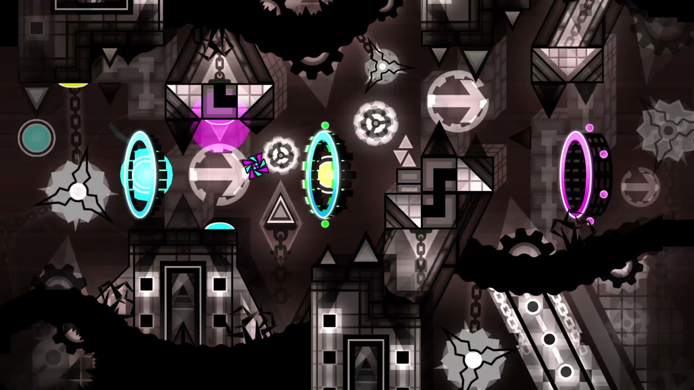
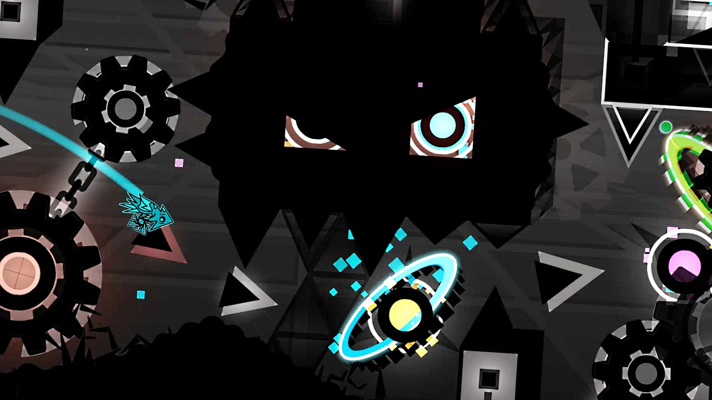

ACHERON

vidéo du niveau |
"Acheron is a 2.1 Extreme Demon mega-collaboration hosted by ryamu and Riot, published by ryamu and verified by Zoink on August 23, 2022, after 72,808 attempts.[1] It was originally set to be verified by Wolvez, who achieved 96% and 92% x2[2] before dropping the level on April 7, 2022, leaving the level with an open verification. The level features a dark, predominantly grayscale theming blended with red accents. It is considered to be a standalone successor to Tartarus, the level that inspired Acheron and its 1.9-styled decoration." |

